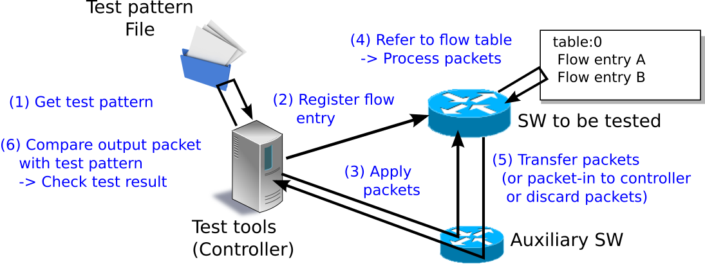
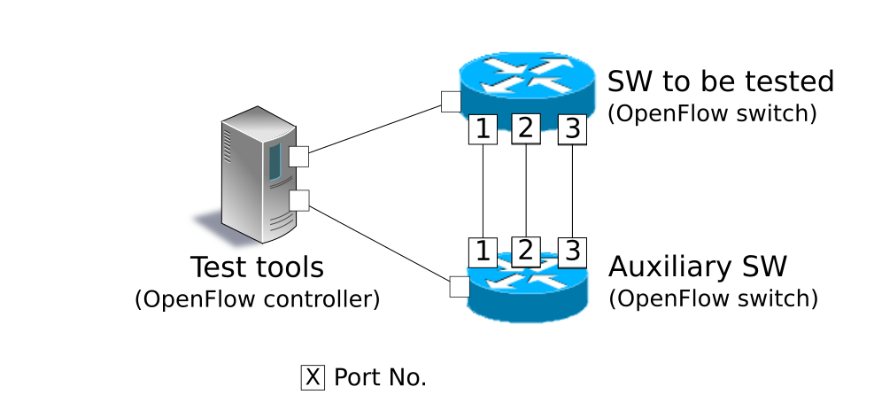
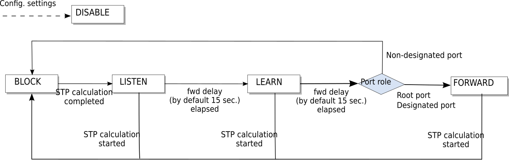
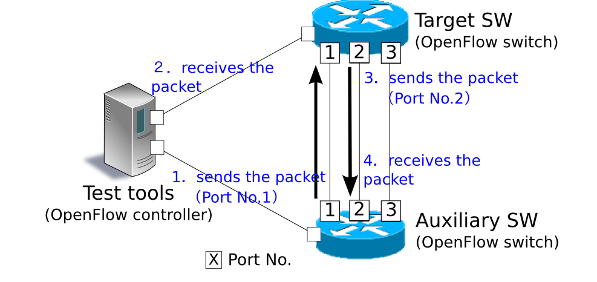

This section uses implementation of a simple switching hub as a material to describes the method of implementing applications using Ryu.
Switching hubs have a variety of functions. Here, we take a look at a switching hub having the following simple functions.
Let’s use Ryu to implement such a switch.
OpenFlow switches can perform the following by receiving instructions from OpenFlow controllers such as Ryu.
It is possible to achieve a switching hub having those functions combined.
First of all, you need to use the Packet-In function to learn MAC addresses. The controller can use the Packet-In function to receive packets from the switch. The switch analyzes the received packets to learn the MAC address of the host and information about the connected port.
After learning, the switch transfers the received packets. The switch investigates whether the destination MAC address of the packets belong to the learned host. Depending on the investigation results, the switch performs the following processing.
The following explains the above operation in a step-by-step way using figures.
Initial status
This is the initial status where the flow table is empty.
Assuming host A is connected to port 1, host B to part 4, and host C to port 3.

Host A -> Host B
When packets are sent from host A to host B, a Packet-In message is sent and the MAC address of host A is learned by port 1. Because the port for host B has not been found, the packets are flooded and are received by host B and host C.
Packet-In:
in-port: 1 eth-dst: Host B eth-src: Host APacket-Out:
action: OUTPUT:Flooding
Host B -> Host A
When the packets are returned from host B to host A, an entry is added to the flow table and also the packets are transferred to port 1. For that reason, the packets are not received by host C.
Packet-In:
in-port: 4 eth-dst: Host A eth-src: Host BPacket-Out:
action: OUTPUT:Port 1
Host A -> Host B
Again, when packets are sent from host A to host B, an entry is added to the flow table and also the packets are transferred to port 4.
Packet-In:
in-port: 1 eth-dst: Host B eth-src: Host APacket-Out:
action: OUTPUT:Port 4
Next, let’s take a look at the source code of a switching hub implemented using Ryu.
The source code of the switching hub is in Ryu’s source tree.
ryu/app/simple_switch_13.py
Other than the above, there are simple_switch.py(OpenFlow 1.0) and simple_switch_12.py(OpenFlow 1.2), depending on the version of OpenFlow but we take a look at implementation supporting OpenFlow 1.3.
The source code is short thus we shown the entire source code below.
from ryu.base import app_manager
from ryu.controller import ofp_event
from ryu.controller.handler import CONFIG_DISPATCHER, MAIN_DISPATCHER
from ryu.controller.handler import set_ev_cls
from ryu.ofproto import ofproto_v1_3
from ryu.lib.packet import packet
from ryu.lib.packet import ethernet
class SimpleSwitch13(app_manager.RyuApp):
OFP_VERSIONS = [ofproto_v1_3.OFP_VERSION]
def __init__(self, *args, **kwargs):
super(SimpleSwitch13, self).__init__(*args, **kwargs)
self.mac_to_port = {}
@set_ev_cls(ofp_event.EventOFPSwitchFeatures, CONFIG_DISPATCHER)
def switch_features_handler(self, ev):
datapath = ev.msg.datapath
ofproto = datapath.ofproto
parser = datapath.ofproto_parser
# install table-miss flow entry
#
# We specify NO BUFFER to max_len of the output action due to
# OVS bug. At this moment, if we specify a lesser number, e.g.,
# 128, OVS will send Packet-In with invalid buffer_id and
# truncated packet data. In that case, we cannot output packets
# correctly.
match = parser.OFPMatch()
actions = [parser.OFPActionOutput(ofproto.OFPP_CONTROLLER,
ofproto.OFPCML_NO_BUFFER)]
self.add_flow(datapath, 0, match, actions)
def add_flow(self, datapath, priority, match, actions):
ofproto = datapath.ofproto
parser = datapath.ofproto_parser
inst = [parser.OFPInstructionActions(ofproto.OFPIT_APPLY_ACTIONS,
actions)]
mod = parser.OFPFlowMod(datapath=datapath, priority=priority,
match=match, instructions=inst)
datapath.send_msg(mod)
@set_ev_cls(ofp_event.EventOFPPacketIn, MAIN_DISPATCHER)
def _packet_in_handler(self, ev):
msg = ev.msg
datapath = msg.datapath
ofproto = datapath.ofproto
parser = datapath.ofproto_parser
in_port = msg.match['in_port']
pkt = packet.Packet(msg.data)
eth = pkt.get_protocols(ethernet.ethernet)[0]
dst = eth.dst
src = eth.src
dpid = datapath.id
self.mac_to_port.setdefault(dpid, {})
self.logger.info("packet in %s %s %s %s", dpid, src, dst, in_port)
# learn a mac address to avoid FLOOD next time.
self.mac_to_port[dpid][src] = in_port
if dst in self.mac_to_port[dpid]:
out_port = self.mac_to_port[dpid][dst]
else:
out_port = ofproto.OFPP_FLOOD
actions = [parser.OFPActionOutput(out_port)]
# install a flow to avoid packet_in next time
if out_port != ofproto.OFPP_FLOOD:
match = parser.OFPMatch(in_port=in_port, eth_dst=dst)
self.add_flow(datapath, 1, match, actions)
data = None
if msg.buffer_id == ofproto.OFP_NO_BUFFER:
data = msg.data
out = parser.OFPPacketOut(datapath=datapath, buffer_id=msg.buffer_id,
in_port=in_port, actions=actions, data=data)
datapath.send_msg(out)
Let’s examine the respective implementation content.
In order to implement as a Ryu application, ryu.base.app_manager.RyuApp is inherited. Also, to use OpenFlow 1.3, the OpenFlow 1.3 version is specified for OFP_VERSIONS.
Also, MAC address table mac_to_port is defined.
In the OpenFlow protocol, some procedures such as handshake required for communication between the OpenFlow switch and the controller have been defined. However, because Ryu’s framework takes care of those procedures thus it is not necessary to be aware of those in Ryu applications.
class SimpleSwitch13(app_manager.RyuApp):
OFP_VERSIONS = [ofproto_v1_3.OFP_VERSION]
def __init__(self, *args, **kwargs):
super(SimpleSwitch13, self).__init__(*args, **kwargs)
self.mac_to_port = {}
# ...
With Ryu, when an OpenFlow message is received, an event corresponding to the message is generated. The Ryu application implements an event handler corresponding to the message desired to be received.
The event handler defines a function having the event object for the argument and use the ryu.controller.handler.set_ev_cls decorator to decorate.
set_ev_cls specifies the event class supporting the received message and the state of the OpenFlow switch for the argument.
The event class name is ryu.controller.ofp_event.EventOFP + <OpenFlow message name>. For example, in case of a Packet-In message, it becomes EventOFPPacketIn. For details, refer to Ryu’s document titled Ryu application API. For the state, specify one of the following or list.
| Definition | Explanation |
|---|---|
| ryu.controller.handler.HANDSHAKE_DISPATCHER | Exchange of HELLO message |
| ryu.controller.handler.CONFIG_DISPATCHER | Waiting to receive SwitchFeatures message |
| ryu.controller.handler.MAIN_DISPATCHER | Normal status |
| ryu.controller.handler.DEAD_DISPATCHER | Disconnection of connection |
After handshake with the OpenFlow switch is completed, the Table-miss flow entry is added to the flow table to get ready to receive the Packet-In message.
Specifically, upon receiving the Switch Features(Features Reply) message, the Table-miss flow entry is added.
@set_ev_cls(ofp_event.EventOFPSwitchFeatures, CONFIG_DISPATCHER)
def switch_features_handler(self, ev):
datapath = ev.msg.datapath
ofproto = datapath.ofproto
parser = datapath.ofproto_parser
# ...
In ev.msg, the instance of the OpenFlow message class corresponding to the event is stored. In this case, it is ryu.ofproto.ofproto_v1_3_parser.OFPSwitchFeatures.
In msg.datapath, the instance of the ryu.controller.controller.Datapath class corresponding to the OpenFlow switch that issued this message is stored.
The Datapath class performs important processing such as actual communication with the OpenFlow switch and issuance of the event corresponding to the received message.
The main attributes used by the Ryu application are as follows:
| Attribute name | Explanation |
|---|---|
| id | ID (data path ID) of the connected OpenFlow switch. |
| ofproto | Indicates the ofproto module that supports the OpenFlow version in use. At this point, it is one of the following modules. ryu.ofproto.ofproto_v1_0 ryu.ofproto.ofproto_v1_2 ryu.ofproto.ofproto_v1_3 |
| ofproto_parser | Same as ofproto, indicates the ofproto_parser module. At this point, it is one of the following modules. ryu.ofproto.ofproto_v1_0_parser ryu.ofproto.ofproto_v1_2_parser ryu.ofproto.ofproto_v1_3_parser |
The main methods of the Datapath class used in the Ryu application are as follows:
send_msg(msg)
Sends the OpenFlow message. msg is a sub class of ryu.ofproto.ofproto_parser.MsgBase corresponding to the send OpenFlow message.
The switching hub does not particularly use the received Switch Features message itself. It is handled as an event to obtain timing to add the Table-miss flow entry.
def switch_features_handler(self, ev):
# ...
# install table-miss flow entry
#
# We specify NO BUFFER to max_len of the output action due to
# OVS bug. At this moment, if we specify a lesser number, e.g.,
# 128, OVS will send Packet-In with invalid buffer_id and
# truncated packet data. In that case, we cannot output packets
# correctly.
match = parser.OFPMatch()
actions = [parser.OFPActionOutput(ofproto.OFPP_CONTROLLER,
ofproto.OFPCML_NO_BUFFER)]
self.add_flow(datapath, 0, match, actions)
The Table-miss flow entry has the lowest (0) priority and this entry matches all packets. In the instruction of this entry, by specifying the output action to output to the controller port, in case the received packet does not match any of the normal flow entries, Packet-In is issued.
Note
As of January 2014, Open vSwitch does not fully support OpenFlow 1.3 and as with versions prior to OpenFlow1.3, Packet-In is issued by default. Also, the Table-miss flow entry is not supported at this time and is handled as a normal flow entry.
An empty match is generated to match all packets. Match is expressed in the OFPMatch class.
Next, an instance of the OUTPTU action class (OFPActionOutput) is generated to transfer to the controller port. The controller is specified as the output destination and OFPCML_NO_BUFFER is specified to max_len in order to send all packets to the controller.
Finall, 0 (lowest) is specified for priority and the add_flow() method is executed to send the Flow Mod message. The content of the add_flow() method is explained in a later section.
Create the handler of the Packet-In event handler in order to accept received packets with an unknown destination.
@set_ev_cls(ofp_event.EventOFPPacketIn, MAIN_DISPATCHER)
def _packet_in_handler(self, ev):
msg = ev.msg
datapath = msg.datapath
ofproto = datapath.ofproto
parser = datapath.ofproto_parser
# ...
Frequently used OFPPacketIn class attributes are as follows:
| Attribute name | Explanation |
|---|---|
| match | ryu.ofproto.ofproto_v1_3_parser.OFPMatch class instance in which the meta information of received packets is set. |
| data | Binary data indicating received packets themselves. |
| total_len | Data length of the received packets. |
| buffer_id | When received packets are buffered on the OpenFlow switch, indicates its ID. If not buffered, ryu.ofproto.ofproto_v1_3.OFP_NO_BUFFER is set. |
def _packet_in_handler(self, ev):
# ...
in_port = msg.match['in_port']
pkt = packet.Packet(msg.data)
eth = pkt.get_protocols(ethernet.ethernet)[0]
dst = eth.dst
src = eth.src
dpid = datapath.id
self.mac_to_port.setdefault(dpid, {})
self.logger.info("packet in %s %s %s %s", dpid, src, dst, in_port)
# learn a mac address to avoid FLOOD next time.
self.mac_to_port[dpid][src] = in_port
# ...
Get the receive port (in_port) from the OFPPacketIn match. The destination MAC address and sender MAC address are obtained from the Ethernet header of the received packets using Ryu’s packet library.
Based on the acquired sender MAC address and received port number, the MAC address table is updated.
In order to support connection with multiple OpenFlow switches, the MAC address table is so designed to be managed for each OpenFlow switch. The data path ID is used to identify OpenFlow switches.
The corresponding port number is used when the destination MAC address exists in the MAC address table. If not found, the instance of the OUTPUT action class specifying flooding (OFPP_FLOOD) for the output port is generated.
def _packet_in_handler(self, ev):
# ...
if dst in self.mac_to_port[dpid]:
out_port = self.mac_to_port[dpid][dst]
else:
out_port = ofproto.OFPP_FLOOD
actions = [parser.OFPActionOutput(out_port)]
# install a flow to avoid packet_in next time
if out_port != ofproto.OFPP_FLOOD:
match = parser.OFPMatch(in_port=in_port, eth_dst=dst)
self.add_flow(datapath, 1, match, actions)
# ...
If the destination MAC address is found, an entry is added to the flow table of the OpenFlow switch.
As with addition of the Table-miss flow entry, specify match and action, and execute add_flow() to add a flow entry.
Unlike the Table-miss flow entry, set conditions for match this time. Implementation of the switching hub this time, the receive port (in_port) and destination MAC address (eth_dst) have been specified. For example, packets addressed to host B received by port 1 is the target.
For the flow entry this time, the priority is specified to 1. The greater the value, the higher the priority, therefore, the flow entry added here will be evaluated before the Table-miss flow entry.
Based on the summary including the aforementioned actions, add the following entry to the flow table.
Transfer packets addressed to host B (the destination MAC address is B) received by port 1 to port 4.
Hint
With OpenFlow, a logical output port called NORMALP is prescribed in option and when NORMAL is specified for the output port, the L2/L3 function of the switch is used to process the packets. That means, by instructing to output all packets to the NORMAL port, it is possible to make the switch operate as a switching hub. However, we implement each processing using OpenFlow.
Processing of the Packet-In handler has not been done yet but here take a look at the method to add flow entries.
def add_flow(self, datapath, priority, match, actions):
ofproto = datapath.ofproto
parser = datapath.ofproto_parser
inst = [parser.OFPInstructionActions(ofproto.OFPIT_APPLY_ACTIONS,
actions)]
# ...
For flow entries, set match that indicates the target packet conditions, and instruction that indicates the operation on the packet, entry priority level, and effective time.
In the switching hub implementation, Apply Actions is used for the instruction to set so that the specified action is immediately used.
Finally, add an entry to the flow table by issuing the Flow Mod message.
def add_flow(self, datapath, port, dst, actions):
# ...
mod = parser.OFPFlowMod(datapath=datapath, priority=priority,
match=match, instructions=inst)
datapath.send_msg(mod)
The class corresponding to the Flow Mod message is the OFPFlowMod class. The instance of the OFPFlowMod class is generated and the message is sent to the OpenFlow switch using the Datapath.send_msg() method.
There are many arguments of constructor of the OFPFlowMod class. Many of them generally can be the default as is. Inside the parenthesis is the default.
datapath
This is the Datapath class instance supporting the OpenFlow switch subject to flow table operation. Normally, specify the one acquired from the event passed to the handler such as the Packet-In message.
cookie (0)
An optional value specified by the controller and can be used as a filter condition when updating or deleting entries. This is not used for packet processing.
cookie_mask (0)
When updating or deleting entries, if a value other than 0 is specified, it is used as the filter of the operation target entry using the cookie value of the entry.
table_id (0)
Specifies the table ID of the operation target flow table.
command (ofproto_v1_3.OFPFC_ADD)
Specify whose operation is to be performed.
Value Explanation OFPFC_ADD Adds new flow entries. OFPFC_MODIFY Updates flow entries. OFPFC_MODIFY_STRICT Update strictly matched flow entries OFPFC_DELETE Deletes flow entries. OFPFC_DELETE_STRICT Deletes strictly matched flow entries.
idle_timeout (0)
Specifies the validity period of this entry, in seconds. If the entry is not referenced and the time specified by idle_timeout elapses, that entry is deleted. When the entry is referenced, the elapsed time is reset.
When the entry is deleted, a Flow Removed message is sent to the controller.
hard_timeout (0)
Specifies the validity period of this entry, in seconds. Unlike dle_timeout, with hard_timeout, even though the entry is referenced, the elapsed time is not reset. That is, regardless of the reference of the entry, the entry is deleted when the specified time elapsed.
As with idle_timeout, when the entry is deleted, a Flow Removed message is sent.
priority (0)
Specifies the priority order of this entry. The greater the value, the higher the priority.
buffer_id (ofproto_v1_3.OFP_NO_BUFFER)
Specifies the buffer ID of the packet buffered on the OpenFlow switch. The buffer ID is notified in the packet-In message and when the specified processing is the same as when two messages are sent, i.e., the Packet-Out message for which OFPP_TABLE is specified for the output port and Flow Mod message. This is ignored when the command is OFPFC_DELETE or OFPFC_DELETE_STRICT.
When the buffer ID is not specified, set OFP_NO_BUFFER.
out_port (0)
If the command is OFPFC_DELETE or OFPFC_DELETE_STRICT, the target entry is filtered by the output port. If the command is OFPFC_ADD, OFPFC_MODIFY, or OFPFC_MODIFY_STRICT, it is ignored.
To disable filtering by the output port, specify OFPP_ANY.
out_group (0)
As wtih out_port, filters by the output group.
To disable, specify OFPG_ANY.
flags (0)
You can specify the following combinations of flags.
Value Explanation OFPFF_SEND_FLOW_REM Issues the Flow Removed message to the controller when this entry is deleted. OFPFF_CHECK_OVERLAP When the command is OFPFC_ADD, checks duplicated entries. If duplicated entries are found, Flow Mod fails and an error is returned. OFPFF_RESET_COUNTS Resets the packet counter and byte counter of the relevant entry. OFPFF_NO_PKT_COUNTS Disables the packet counter of this entry. OFPFF_NO_BYT_COUNTS Disables the byte counter of this entry.
match (None)
Specifies match.
instructions ([])
Specifies a list of instructions.
Now we return to the Packet-In handler and explain about final processing.
Regardless whether the destination MAC address is found from the MAC address table, at the end the Packet-Out message is issued and received packets are transferred.
def _packet_in_handler(self, ev):
# ...
data = None
if msg.buffer_id == ofproto.OFP_NO_BUFFER:
data = msg.data
out = parser.OFPPacketOut(datapath=datapath, buffer_id=msg.buffer_id,
in_port=in_port, actions=actions, data=data)
datapath.send_msg(out)
The class corresponding to the Packet-Out message is OFPPacketOut class.
The arguments of the constructor of OFPPacketOut are as follows:
datapath
Specifies the instance of the Datapath class corresponding to the OpenFlow switch.
buffer_id
Specifies the buffer ID of the packets buffered on the OpenFlow. If not buffered, OFP_NO_BUFFER is specified.
in_port
Specifies the port that received packets. if it is not the received packet, OFPP_CONTROLLER is specified.
actions
Specifies the list of actions.
data
Specifies the binary data of packets. This is used when OFP_NO_BUFFER is specified for buffer_id. When the OpenFlow switch’s buffer is used, this is omitted.
In the switching hub implementation, buffer_id of the Packet-In message has been specified for buffer_id. If the buffer-id of the Packet-In message has been disabled, the received packet of Packet-In is specified for data to send the packets.
This is the end of explanation of the source code of switching hub. Next, let’s execute this switching hub to confirm actual operation.
To run the switching hub, we use Open vSwitch for the OpenFlow switch and mininet for the execution environment.
Because OpenFlow Tutorial VM images for Ryu have been prepared, using those VM images makes it easy to prepare the execution environment.
VM image
http://sourceforge.net/projects/ryu/files/vmimages/OpenFlowTutorial/
OpenFlow_Tutorial_Ryu3.2.ova (approx. 1.4GB)
Related document (Wiki page)
Because the Open vSwitch and Ryu version used for the VM images in the document are old, you must be careful.
If you do not want to use these VM images, you of course can build an environment yourself. For your reference, when building an environment yourself, the version of each software used for the VM images is as follows.
$ sudo pip install ryu
Here, we use the VM images of the OpenFlow Tutorial for Ryu.
Because xterm is started from mininet, an environment where X can be used is necessary.
Because VM of OpenFlow Tutorial is used, log in from a desktop PC using ssh with X11 Forwarding enabled.
$ ssh -X ryu@<VM address>
The user name is ryu, and the password is ryu.
When you log in, use the mn command to start the Mininet environment.
The environment to be built has a simple structure with three hosts and one switch.
mn command parameters are as follows:
| Parameter | Value | Explanation |
|---|---|---|
| topo | single,3 | Topology of one switch and three hosts |
| mac | None | Automatically sets the MAC address of the host |
| switch | ovsk | Uses Open vSwitch |
| controller | remote | Uses external OpenFlow controller |
| x | None | Starts xterm |
An execution example is as follows:
$ sudo mn --topo single,3 --mac --switch ovsk --controller remote -x
*** Creating network
*** Adding controller
Unable to contact the remote controller at 127.0.0.1:6633
*** Adding hosts:
h1 h2 h3
*** Adding switches:
s1
*** Adding links:
(h1, s1) (h2, s1) (h3, s1)
*** Configuring hosts
h1 h2 h3
*** Running terms on localhost:10.0
*** Starting controller
*** Starting 1 switches
s1
*** Starting CLI:
mininet>
When executing the command, five xterm start on the desktop PC. Each xterm corresponds to hosts 1 to 3, the switch and the controller.
Execute the command from the xterm for the switch to set the OpenFlow version to be used. The xterm for which the window title is “switch:s1 (root)” is the one for the switch.
First of all, let’s take a look at the status of Open vSwitch.
switch: s1:
root@ryu-vm:~# ovs-vsctl show
fdec0957-12b6-4417-9d02-847654e9cc1f
Bridge "s1"
Controller "ptcp:6634"
Controller "tcp:127.0.0.1:6633"
fail_mode: secure
Port "s1-eth3"
Interface "s1-eth3"
Port "s1-eth2"
Interface "s1-eth2"
Port "s1-eth1"
Interface "s1-eth1"
Port "s1"
Interface "s1"
type: internal
ovs_version: "1.11.0"
root@ryu-vm:~# ovs-dpctl show
system@ovs-system:
lookups: hit:14 missed:14 lost:0
flows: 0
port 0: ovs-system (internal)
port 1: s1 (internal)
port 2: s1-eth1
port 3: s1-eth2
port 4: s1-eth3
root@ryu-vm:~#
Switch (bridge) s1 has been created and three ports corresponding to hosts have been added.
Next, set 1.3 for the OpenFlow version.
switch: s1:
root@ryu-vm:~# ovs-vsctl set Bridge s1 protocols=OpenFlow13
root@ryu-vm:~#
Let’s check the empty flow table.
switch: s1:
root@ryu-vm:~# ovs-ofctl -O OpenFlow13 dump-flows s1
OFPST_FLOW reply (OF1.3) (xid=0x2):
root@ryu-vm:~#
The ovs-ofctl command needs to specify the OpenFlow version to be used as an option. The default is OpenFlow10.
Preparation is now done and we will run the Ryu application.
From the xterm for which the window title is “controller: c0 (root)”, execute the following commands.
controller: c0:
root@ryu-vm:~# ryu-manager --verbose ryu.app.simple_switch_13
loading app ryu.app.simple_switch_13
loading app ryu.controller.ofp_handler
instantiating app ryu.app.simple_switch_13
instantiating app ryu.controller.ofp_handler
BRICK SimpleSwitch13
CONSUMES EventOFPSwitchFeatures
CONSUMES EventOFPPacketIn
BRICK ofp_event
PROVIDES EventOFPSwitchFeatures TO {'SimpleSwitch13': set(['config'])}
PROVIDES EventOFPPacketIn TO {'SimpleSwitch13': set(['main'])}
CONSUMES EventOFPErrorMsg
CONSUMES EventOFPHello
CONSUMES EventOFPEchoRequest
CONSUMES EventOFPPortDescStatsReply
CONSUMES EventOFPSwitchFeatures
connected socket:<eventlet.greenio.GreenSocket object at 0x2e2c050> address:('127.0.0.1', 53937)
hello ev <ryu.controller.ofp_event.EventOFPHello object at 0x2e2a550>
move onto config mode
EVENT ofp_event->SimpleSwitch13 EventOFPSwitchFeatures
switch features ev version: 0x4 msg_type 0x6 xid 0xff9ad15b OFPSwitchFeatures(auxiliary_id=0,capabilities=71,datapath_id=1,n_buffers=256,n_tables=254)
move onto main mode
It may take time to connect to OVS but after you wait for a while, as shown above...
connected socket:<....
hello ev ...
...
move onto main mode
,,,is displayed.
Now OVS has been connected, handshake has been performed, the Table-miss flow entry has been added and the switching hub is in the status waiting for Packet-In.
Confirm that the Table-miss flow entry has been added.
switch: s1:
root@ryu-vm:~# ovs-ofctl -O openflow13 dump-flows s1
OFPST_FLOW reply (OF1.3) (xid=0x2):
cookie=0x0, duration=105.975s, table=0, n_packets=0, n_bytes=0, priority=0 actions=CONTROLLER:65535
root@ryu-vm:~#
The priority level is 0, no match, and CONTROLLER is specified for action, and transfer data size of 65535(0xffff = OFPCML_NO_BUFFER) is specified.
Execute ping from host 1 to host 2.
ARP request
At this point, host 1 does not know the MAC address of host 2, therefore, before ICMP echo request, an ARP request is supposed to be broadcast. The broadcast packet is received by host 2 and host 3.
ARP reply
In response to the ARP, host 2 returns an ARP reply to host 1.
ICMP echo request
Now host 1 knows the MAC address of host 2, host 1 sends an echo request to host 2.
ICMP echo reply
Because host 2 already knows the MAC address of host 1, host 2 returns an echo reply to host 1.
Communications like those above are supposed to take place.
Before executing the ping command, execute the tcpdump command so that it is possible to check what packets were received by each host.
host: h1:
root@ryu-vm:~# tcpdump -en -i h1-eth0
tcpdump: verbose output suppressed, use -v or -vv for full protocol decode
listening on h1-eth0, link-type EN10MB (Ethernet), capture size 65535 bytes
host: h2:
root@ryu-vm:~# tcpdump -en -i h2-eth0
tcpdump: verbose output suppressed, use -v or -vv for full protocol decode
listening on h2-eth0, link-type EN10MB (Ethernet), capture size 65535 bytes
host: h3:
root@ryu-vm:~# tcpdump -en -i h3-eth0
tcpdump: verbose output suppressed, use -v or -vv for full protocol decode
listening on h3-eth0, link-type EN10MB (Ethernet), capture size 65535 bytes
Use the console where the mn command is executed first, execute the following command to issue ping from host 1 to host 2.
mininet> h1 ping -c1 h2
PING 10.0.0.2 (10.0.0.2) 56(84) bytes of data.
64 bytes from 10.0.0.2: icmp_req=1 ttl=64 time=97.5 ms
--- 10.0.0.2 ping statistics ---
1 packets transmitted, 1 received, 0% packet loss, time 0ms
rtt min/avg/max/mdev = 97.594/97.594/97.594/0.000 ms
mininet>
ICMP echo reply has returned normally.
First of all, check the flow table.
switch: s1:
root@ryu-vm:~# ovs-ofctl -O openflow13 dump-flows s1
OFPST_FLOW reply (OF1.3) (xid=0x2):
cookie=0x0, duration=417.838s, table=0, n_packets=3, n_bytes=182, priority=0 actions=CONTROLLER:65535
cookie=0x0, duration=48.444s, table=0, n_packets=2, n_bytes=140, priority=1,in_port=2,dl_dst=00:00:00:00:00:01 actions=output:1
cookie=0x0, duration=48.402s, table=0, n_packets=1, n_bytes=42, priority=1,in_port=1,dl_dst=00:00:00:00:00:02 actions=output:2
root@ryu-vm:~#
In addition to the Table-miss flow entry, tow flow entries of priority level 1 have been registered.
Entry (1) was referenced twice (n_packets) and entry (2) was referenced once. Because (1) is a communication from host 2 to host 1, ARP reply and ICMP echo reply must have matched. (2) is a communication from host 1 to host 2 and because ARP request is broadcast, this is supposed to be by ICMP echo request.
Now, let’s look at the log output of simple_switch_13.
controller: c0:
EVENT ofp_event->SimpleSwitch13 EventOFPPacketIn
packet in 1 00:00:00:00:00:01 ff:ff:ff:ff:ff:ff 1
EVENT ofp_event->SimpleSwitch13 EventOFPPacketIn
packet in 1 00:00:00:00:00:02 00:00:00:00:00:01 2
EVENT ofp_event->SimpleSwitch13 EventOFPPacketIn
packet in 1 00:00:00:00:00:01 00:00:00:00:00:02 1
The first Packet-In is the ARP request issued by host 1 and is a broadcast, the flow entry is not registered and only Packet-Out is issued.
The second one is the ARP reply returned from host 2 and because its destination MAC address is host 1, the aforementioned flow entry (1) is registered.
The third one is the ICMP echo request sent from host 1 to host 2 and flow entry (2) is registered.
The ICMP echo reply returned from host 2 to host 1 matches the already registered flow entry (1) thus is transferred to host 1 without issuing Packet-In.
Finally, let’s take a look at the output of tcpdump executed on each host.
host: h1:
root@ryu-vm:~# tcpdump -en -i h1-eth0
tcpdump: verbose output suppressed, use -v or -vv for full protocol decode
listening on h1-eth0, link-type EN10MB (Ethernet), capture size 65535 bytes
20:38:04.625473 00:00:00:00:00:01 > ff:ff:ff:ff:ff:ff, ethertype ARP (0x0806), length 42: Request who-has 10.0.0.2 tell 10.0.0.1, length 28
20:38:04.678698 00:00:00:00:00:02 > 00:00:00:00:00:01, ethertype ARP (0x0806), length 42: Reply 10.0.0.2 is-at 00:00:00:00:00:02, length 28
20:38:04.678731 00:00:00:00:00:01 > 00:00:00:00:00:02, ethertype IPv4 (0x0800), length 98: 10.0.0.1 > 10.0.0.2: ICMP echo request, id 3940, seq 1, length 64
20:38:04.722973 00:00:00:00:00:02 > 00:00:00:00:00:01, ethertype IPv4 (0x0800), length 98: 10.0.0.2 > 10.0.0.1: ICMP echo reply, id 3940, seq 1, length 64
Host 1 first broadcast the ARP request and then received the ARP reply returned from host 2. Next, host 1 issued the ICMP echo request and received the ICMP echo reply returned from host 2.
host: h2:
root@ryu-vm:~# tcpdump -en -i h2-eth0
tcpdump: verbose output suppressed, use -v or -vv for full protocol decode
listening on h2-eth0, link-type EN10MB (Ethernet), capture size 65535 bytes
20:38:04.637987 00:00:00:00:00:01 > ff:ff:ff:ff:ff:ff, ethertype ARP (0x0806), length 42: Request who-has 10.0.0.2 tell 10.0.0.1, length 28
20:38:04.638059 00:00:00:00:00:02 > 00:00:00:00:00:01, ethertype ARP (0x0806), length 42: Reply 10.0.0.2 is-at 00:00:00:00:00:02, length 28
20:38:04.722601 00:00:00:00:00:01 > 00:00:00:00:00:02, ethertype IPv4 (0x0800), length 98: 10.0.0.1 > 10.0.0.2: ICMP echo request, id 3940, seq 1, length 64
20:38:04.722747 00:00:00:00:00:02 > 00:00:00:00:00:01, ethertype IPv4 (0x0800), length 98: 10.0.0.2 > 10.0.0.1: ICMP echo reply, id 3940, seq 1, length 64
Host 2 received the ARP request issued by host 1 and returned the ARP reply to host 1. Then, host 2 received the ICMP echo request from host 1 and returned the echo reply to host 1.
host: h3:
root@ryu-vm:~# tcpdump -en -i h3-eth0
tcpdump: verbose output suppressed, use -v or -vv for full protocol decode
listening on h3-eth0, link-type EN10MB (Ethernet), capture size 65535 bytes
20:38:04.637954 00:00:00:00:00:01 > ff:ff:ff:ff:ff:ff, ethertype ARP (0x0806), length 42: Request who-has 10.0.0.2 tell 10.0.0.1, length 28
Host 3 only received the ARP request broadcast by host 1 at first.
This section used implementation of a simple switching hub as material to describe the basic procedures of implementation of a Ryu application and a simple method of controlling the OpenFlow switch using OpenFlow.
{kind=link}
{kind=link}
{kind=link}
{kind=link}